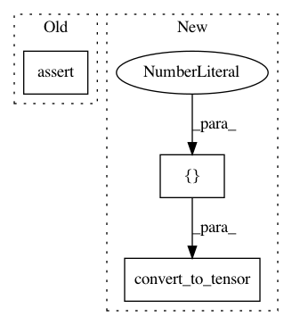

5f64204ab895dee4c4a706879f89d714237a5057,tests/test_minkowski_space_tensorflow.py,TestMinkowskiSpaceTensorFlow,test_squared_norm,#TestMinkowskiSpaceTensorFlow#,101
Before Change
result = self.metric.squared_norm(point)
expected = gs.dot(point, point)
expected -= 2 * point[self.time_like_dim] * point[self.time_like_dim]
gs.testing.assert_allclose(result, expected)
def test_squared_norm_vectorization(self):
n_samples = self.n_samples
n_points = self.space.random_uniform(n_samples=n_samples)
After Change
self.assertAllClose(gs.eval(result_nn), gs.eval(expected) )
def test_squared_norm(self):
point = tf.convert_to_tensor([-2., 4.])
result = self.metric.squared_norm(point)
expected = gs.dot(point, point)
expected -= 2 * point[self.time_like_dim] * point[self.time_like_dim]
In pattern: SUPERPATTERN
Frequency: 3
Non-data size: 3
Instances
Project Name: geomstats/geomstats
Commit Name: 5f64204ab895dee4c4a706879f89d714237a5057
Time: 2018-09-26
Author: claire.donnat@gmail.com
File Name: tests/test_minkowski_space_tensorflow.py
Class Name: TestMinkowskiSpaceTensorFlow
Method Name: test_squared_norm
Project Name: geomstats/geomstats
Commit Name: 5f64204ab895dee4c4a706879f89d714237a5057
Time: 2018-09-26
Author: claire.donnat@gmail.com
File Name: tests/test_minkowski_space_tensorflow.py
Class Name: TestMinkowskiSpaceTensorFlow
Method Name: test_inner_product_matrix
Project Name: geomstats/geomstats
Commit Name: 5f64204ab895dee4c4a706879f89d714237a5057
Time: 2018-09-26
Author: claire.donnat@gmail.com
File Name: tests/test_minkowski_space_tensorflow.py
Class Name: TestMinkowskiSpaceTensorFlow
Method Name: test_inner_product